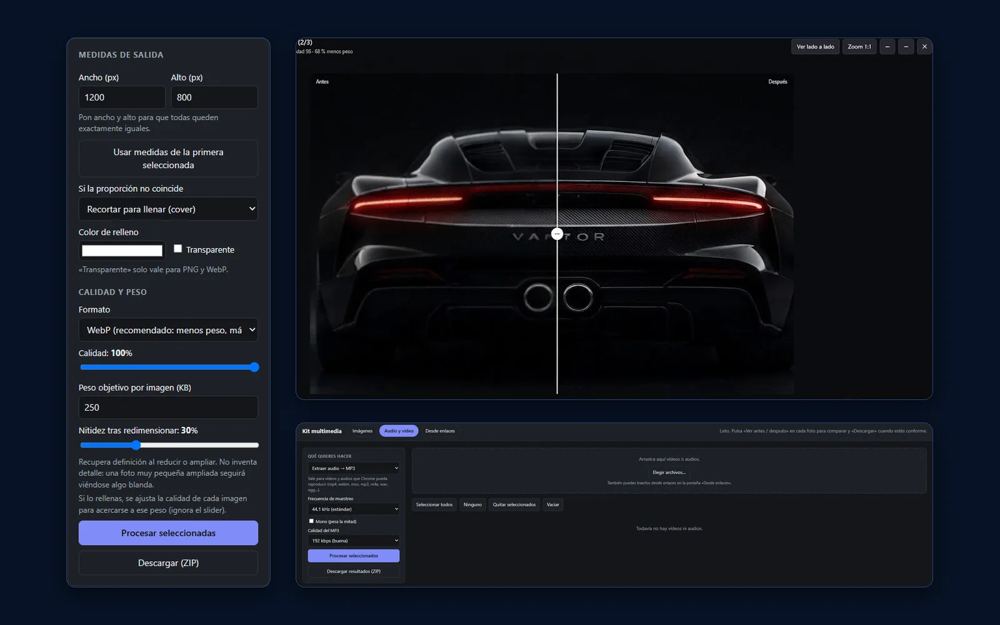
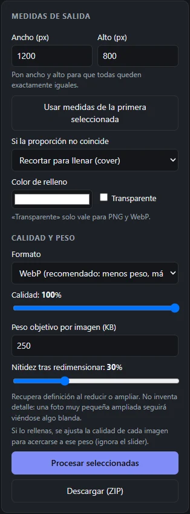
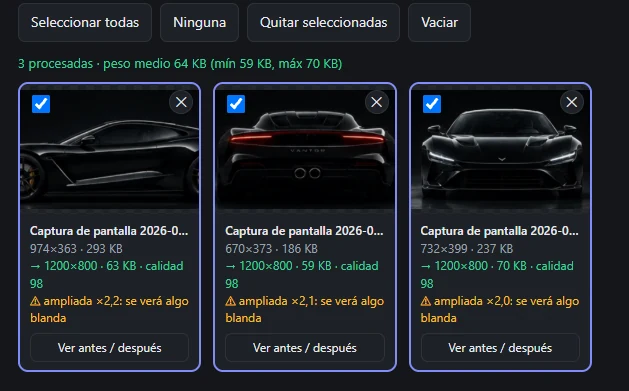
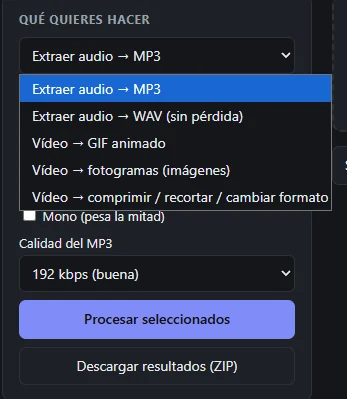
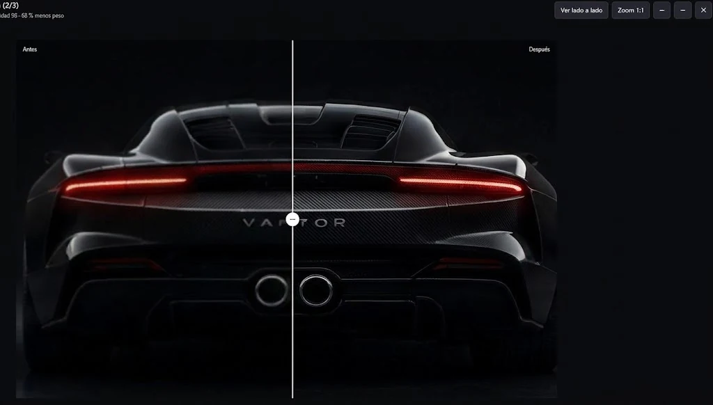
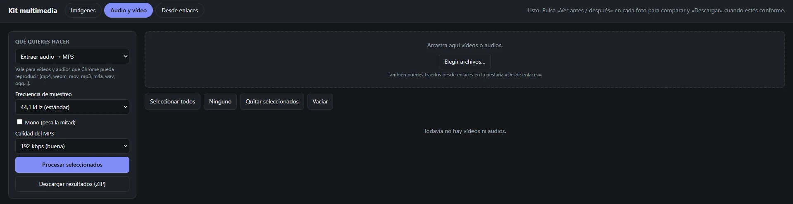

Kit multimedia
Extensión que reúne en una sola pestaña las tareas habituales con imágenes, audio y vídeo: igualar medidas, bajar el peso, extraer el audio, hacer un GIF o descargar un archivo por enlace. Todo se procesa dentro del navegador.

El problema
Preparar archivos multimedia suele significar saltar entre programas de escritorio y webs de conversión, a menudo subiendo los archivos a un servidor ajeno.
La necesidad
Tareas pequeñas y repetidas: dejar una tanda de imágenes exactamente del mismo tamaño y por debajo de un peso concreto, sacar el audio de un vídeo, convertir un clip en GIF o guardar un archivo que está en una web.
Qué propone Kit multimedia
Reunir esas tareas en una única interfaz dentro de Chrome y resolverlas en local, con los codificadores y las API que ya ofrece el navegador, sin cuentas ni servidores intermedios.
La solución
Así se usa, de principio a fin. La extensión no corre en segundo plano: solo actúa cuando se abre.
- Pulsas el iconoEl Kit se abre en una pestaña nueva y recuerda desde qué web lo abriste.
- Eliges la herramientaImágenes, Audio y vídeo, o Desde enlaces.
- Añades archivosArrastrándolos, pegando con Ctrl+V, eligiéndolos, trayéndolos de la web de origen o desde enlaces.
- Ajustas el resultadoMedidas, formato, calidad, peso objetivo, tramo de vídeo, frecuencia de audio…
- Se procesa en el navegadorCon canvas, Web Audio, MediaRecorder y dos codificadores en JavaScript.
- Revisas y descargasComparas antes y después y descargas el archivo, o varios en un ZIP.
Funcionalidades
Tres pestañas: Imágenes, Audio y vídeo, y Desde enlaces. Los resultados se descargan sueltos o en un ZIP.
Imágenes a medida exacta
Mismo ancho y alto para todo el lote. Si la proporción no coincide: recortar para llenar, encajar con bandas de color o estirar. Con transparencia opcional en PNG y WebP.
Peso objetivo en KB
En JPEG y WebP, ajusta la calidad de cada imagen para acercarse al peso indicado. Si no llega, lo señala en esa imagen.
Nitidez y avisos
Aplica un enfoque suave tras redimensionar y avisa cuando una imagen se amplía más de ×1,5, porque se verá algo blanda.
Comparador antes y después
Control deslizante o vista lado a lado, zoom 1:1 y paso entre imágenes, con el ahorro de peso de cada una.
Audio a MP3 o WAV
Desde vídeos y audios que Chrome pueda reproducir. Frecuencia de 44,1 o 48 kHz, opción mono y MP3 de 128 a 320 kbps.
Vídeo a GIF
Indicas inicio, duración, ancho y fotogramas por segundo. Limita el resultado a 400 fotogramas para no bloquear el navegador.
Fotogramas
Un fotograma en un instante concreto, o uno cada cierto número de segundos, en JPEG, PNG o WebP (hasta 300 imágenes).
Comprimir y recortar vídeo
Salida en MP4 o WebM, con ancho, tasa de bits y tramo a elegir, y opción de quitar el sonido.
Desde enlaces
Descarga enlaces directos a archivos, extrae su audio en MP3 o los carga en las otras pestañas. También busca vídeos y audios en la web de origen.
Capturas reales
Pantallas de la extensión con un lote de tres imágenes reales: se llevan a 1200×800 en WebP con un peso objetivo de 250 KB.





Arquitectura y tecnologías
Una página de extensión con su interfaz y un service worker mínimo. No hay content scripts permanentes ni dependencias que instalar: las dos librerías de codificación van incluidas en el propio paquete.
- Icono de la extensiónAcción del navegador
- Service workerAbre el Kit con el id de la pestaña de origen
- Interfaz del KitTres pestañas en una página de extensión
- Procesado localCanvas · Web Audio · MediaRecorder · lamejs · gifenc
- DescargaArchivo suelto o ZIP generado en el navegador
- background.jsService worker de una sola función: al pulsar el icono abre
index.htmlen una pestaña nueva, pasando el id de la pestaña desde la que se abrió. - app.js e index.htmlInterfaz y lógica de la pestaña Imágenes: cola de archivos, redimensionado con canvas, peso objetivo, enfoque, comparador y descarga.
- media.js y codecs.jsPestaña Audio y vídeo: decodificación con Web Audio, codificación a WAV y MP3, GIF con gifenc, fotogramas y recodificado de vídeo.
- url.jsPestaña Desde enlaces: validación de URLs, descarga con progreso y búsqueda de medios en la web de origen.
- zip.jsGenerador de ZIP propio (sin compresión, con CRC32 y nombres UTF-8) para no depender de una librería.
- vendor/lamejs y gifenc incluidos en local: la extensión funciona sin cargar código externo.
Privacidad
Los archivos se procesan en el navegador. Estas son las únicas situaciones en las que la extensión hace peticiones de red.
Qué garantiza el diseño
- Imágenes, audio y vídeo no se suben a ningún servidor
- No necesita cuenta ni tiene servidores propios
- No incorpora analítica
- No guarda datos: no usa ninguna API de almacenamiento y, al cerrar la pestaña, la lista de archivos desaparece
- No incluye funciones de IA
Cuándo hay red
Solo en dos casos, y siempre a petición del usuario: al cargar las imágenes de la web de origen y al descargar los enlaces que se pegan en «Desde enlaces». En ambos casos la petición va al sitio donde está el archivo, como haría el propio navegador.
La descarga por enlace envía las cookies de ese sitio, de modo que puede acceder a lo que tu sesión ya puede ver.
activeTab y scripting para leer la pestaña de origen solo cuando se pulsa el botón correspondiente, y acceso a todas las URL (<all_urls>) para que la página de la extensión pueda descargar archivos de cualquier dominio sin las restricciones CORS. Es un permiso amplio: la extensión solo pide los archivos que el usuario indica o que están en la página de origen, pero se podría restringir pidiendo permisos de sitio opcionales.Retos técnicos
Lo más delicado fue hacer en el navegador, sin programas externos, cosas que normalmente se delegan en herramientas de escritorio.
Recodificar vídeo sin un transcodificador
El vídeo se reproduce en un elemento video, se dibuja en un canvas y se graba con MediaRecorder; el sonido pasa por Web Audio para que no suene mientras se procesa. Por eso trabaja a velocidad real y necesita la pestaña visible.
Depender de lo que sabe grabar Chrome
El código prueba una lista de tipos MIME para MP4 o WebM y, si el navegador no graba MP4, guarda en WebM y lo avisa en el resultado.
Calidad al redimensionar
Antes del dibujado final reduce la imagen a la mitad por pasos, que da un resultado más limpio que un único salto grande, y aplica después una máscara de enfoque ajustable.
Llegar a un peso concreto
Para JPEG y WebP hace una búsqueda binaria sobre la calidad (de 0,05 a 0,98) hasta quedarse justo por debajo del peso objetivo, y marca las imágenes que no lo consiguen.
No bloquear la interfaz
La codificación MP3 y GIF cede el control al navegador cada pocos bloques, y hay límites explícitos: 400 fotogramas de GIF, 300 fotogramas sueltos y 300 MB para convertir un enlace a MP3.
Enlaces que no son archivos
Comprueba el tipo de contenido y rechaza con un mensaje claro las páginas web y las emisiones HLS o DASH; al buscar en la web de origen avisa de los vídeos blob:, que no se pueden descargar. Toma el nombre de la cabecera Content-Disposition o del tipo MIME y evita nombres duplicados en el ZIP.
Resultados y estado
Un caso de uso real, documentado con las capturas de arriba.
Alcance real: son cifras de un único lote de tres imágenes, no un estudio de rendimiento. El repositorio no incluye pruebas automatizadas, así que la verificación ha sido manual y no se publican resultados de pruebas.
Estado y límites
Estado actual
Versión 2.0.0. Se usa mediante instalación local en modo desarrollador; no está publicada en Chrome Web Store.
Limitaciones conocidas
- Recodificar vídeo lleva tanto como dura el vídeo
- Solo procesa audio y vídeo que Chrome sepa reproducir
- No descarga YouTube, TikTok, Vimeo ni emisiones por streaming
- Ampliar una imagen pequeña no añade detalle
Posibles mejoras (no implementadas): pruebas automatizadas del procesado, un README del proyecto y permisos de sitio opcionales en lugar de acceso a todas las URL.